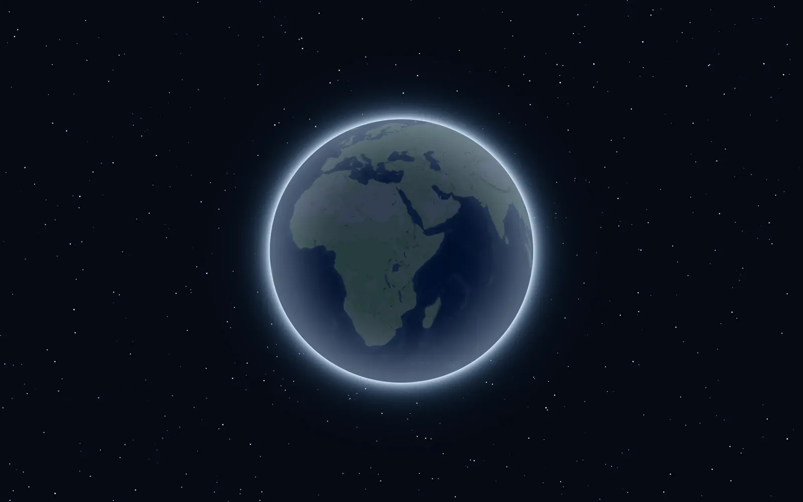
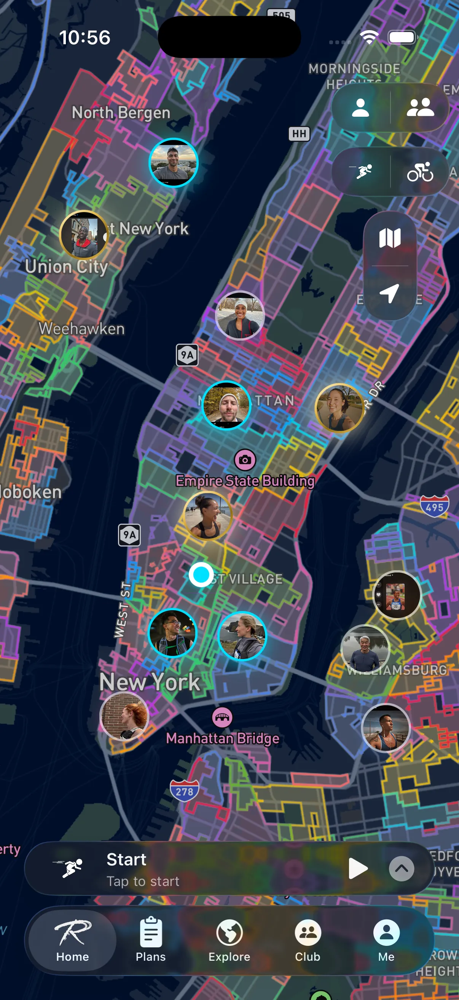
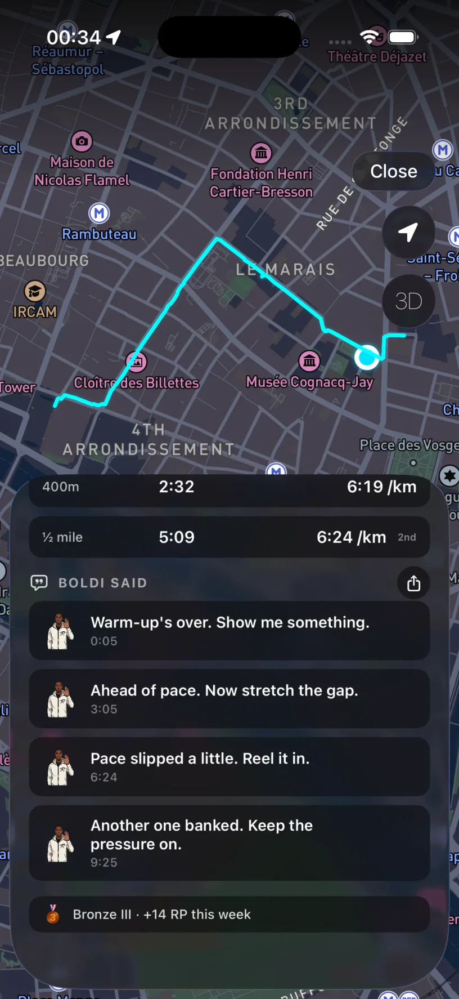
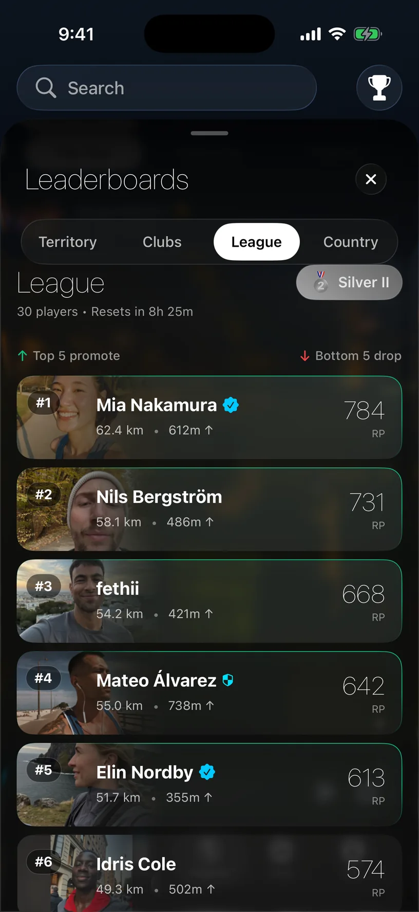
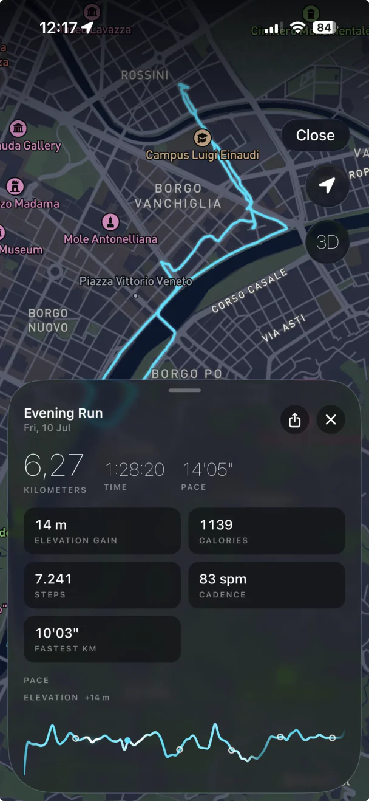
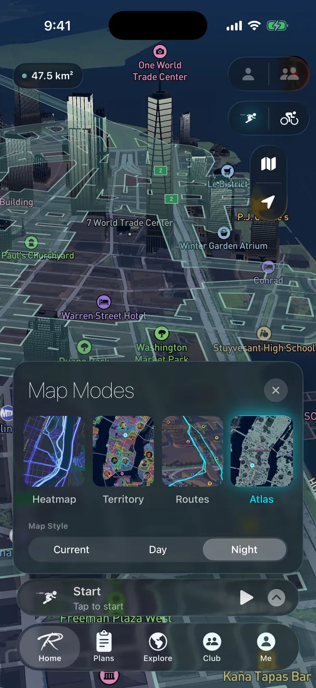
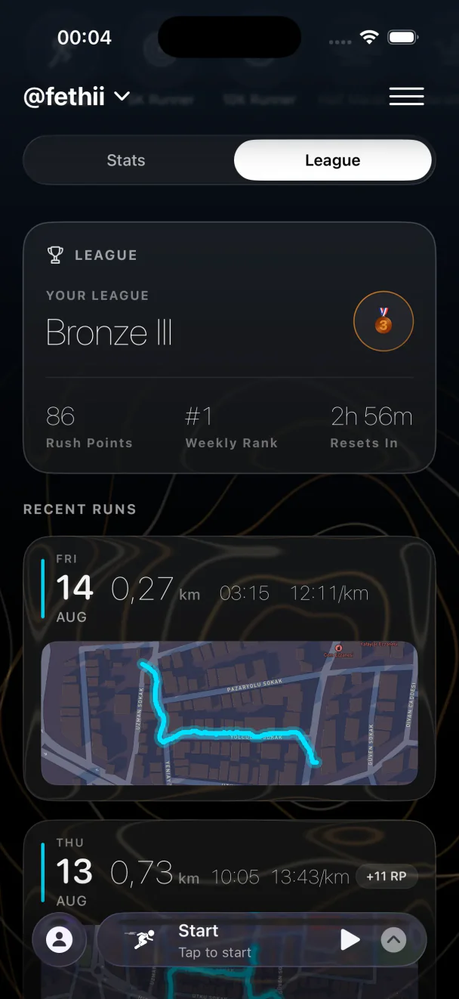

Clubs and a feed worth reading
Join a club, post the run, comment on someone else's. The social feed is built around activities, so there is always something on the map behind the picture.
RouteRush for iOS
RouteRush

The difference
The same run, scored differently. Distance and pace are the receipt. The map is the score — a permanent record of the streets you have actually covered, block by block, against everyone else covering theirs.
Ground taken
Close a loop on your run and everything inside it becomes yours, in the shape of the streets you took. Come back a different way and the shape of what you own changes.
Distance earns, ground earns more. Every kilometre earns, a running streak multiplies it, and new ground earns on top — only ground you did not already hold, so the same loop cannot be farmed.
Ground changes hands. Nobody wears your claim down — they take it. A rival who closes a loop over your ground has the overlap cut out the moment their run saves.
It compounds. Territory carries between runs, so a neighbourhood is something you build over months.

Boldi, the in-run coach
Boldi watches the run as it happens — your pace, the ground ahead, how much you have left — and, on a coached run, says something when it is worth saying. The rest of the time he is quiet, so your music keeps playing.
Timed to the effort. Prompts arrive at splits and decision points, not on a fixed timer.
Aware of the map. He knows which ground is still unclaimed on the route in front of you.
Both tiers also carry a verified badge and unlimited username changes.

Live Activity & widget
Time, distance and pace stay on the Lock Screen and in the Dynamic Island, and stay interactive — pause and resume without unlocking. The Home Screen widget opens straight to Start.
Home Screen widget. One tap opens the app with your sport ready to start.
Leagues
Every week you join a league at your tier, up to thirty runners. The top sixth goes up and the bottom sixth goes down — five each way in a full league — and everyone starts again on Monday. Three scoring runs is the price of going up. Bronze, Silver and Gold, each with three divisions.
New to a tier? A newbie shield covers your first week, so a bad one cannot send you straight back down.

Captured on iPhone, running the shipping build.



No roadmap items. These are in the app today.
Join a club, post the run, comment on someone else's. The social feed is built around activities, so there is always something on the map behind the picture.
Call out a rival club and set the clock — three hours to seven days. Every piece of ground your side takes counts, and it settles itself when time is up.
Steps, weight and heart rate read in. Workouts written back out.
Four weeks built for your first runs, then 5K, 10K, half and full marathon. Free, week by week.
Tracking survives no signal. Activities queue on device and sync when the network returns.
Why it matters
Nothing on your map was given to you. Every inch of it is a street you actually ran.
RouteRush
RouteRush is free to start. iPhone, iOS 18 or later. Your first run claims its first ground about twenty seconds in.